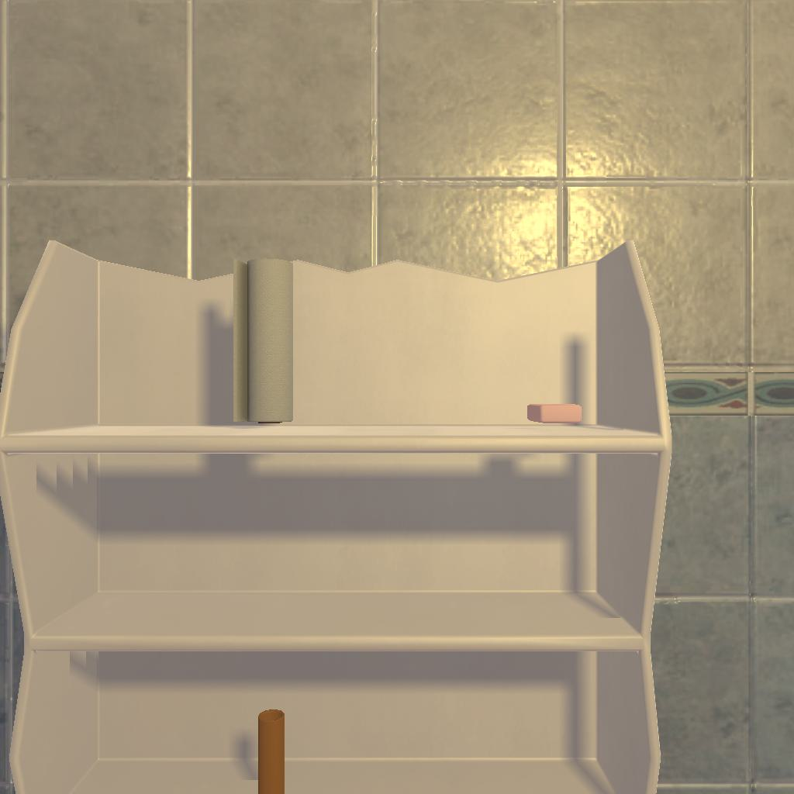

---------------------------------------------------------task: 25---------------------------------------------------------
--------------------------------------------------------------------------------------------------------------------------------------------------------------------
--------------------------------------------------------------------------------------------------------------------------------------------------------------------
Step:--------------------------------------------------------------------------13-------------------------------------------------------------------------------
----------------------------------------
VLM Prompt:
Image1:
Image2:
**Instruction**
1. Analyze the provided images to identify all visible household objects and compare the difference between images (e.h. whether the object is opened or not and taken on hand or not), focusing on those relevant to the task description "find two dishsponge and put them in cart."
2. Use the analysis of images and the task hint "The agent must find an object of the desired type, pick it up, find the correct location to place it, put it down there, then look for another object of the desired type, pick it up, return to previous location, and put it down there with the other object." to answer the question: what is the most reasonable action in the choices for the task description "find two dishsponge and put them in cart"?
3. Decide and write the answer using the template: The answer is: (i): , where i is the real number. If there is no desired object in images, search every place based on **Initial Observation** to find the object. And if no one is exactly correct, choose a similar answer.
**Initial Observation**
You are in the middle of a room. Looking quickly around you, you can see bathtub (1), bathtubbasin (1), cart (1), toilet (1), garbagecan (1), toiletpaperhanger (1), shelf (1-4), sink (1), sinkbasin (1), handtowelholder (1)
**Answer Choices**
(1): go to bathtub 1
(2): go to bathtubbasin 1
(3): go to cart 1
(4): go to toilet 1
(5): go to garbagecan 1
(6): go to toiletpaperhanger 1
(7): go to shelf 1
(8): go to shelf 2
(9): go to shelf 3
(10): go to sink 1
(11): go to sinkbasin 1
(12): go to handtowelholder 1
(13): take papertowelroll 1 from shelf 4
(14): take toiletpaper 1 from shelf 4
(15): take soapbar 1 from shelf 4
**Answer**
Let's think step by step by following the instructions.
----------------------------------------
----------------------------------------
Original Response:
Image Analysis:
- In both images, we can see a shelf with some objects on it.
- On the top shelf, there is a papertowelroll and a soapbar. There is no visible difference between the two images regarding these objects.
- There is no dishsponge visible on the shelf or any other object that would be relevant to the task description.
Task Hint Analysis:
- The task requires the agent to find two dishsponges and put them in the cart.
- The agent must look for the dishsponge, pick it up, and then put it in the cart.
- After placing the first dishsponge in the cart, the agent must find the second dishsponge and place it in the cart as well.
Initial Observation Analysis:
- The initial observation provides us with a list of objects and locations in the room.
- The objects relevant to our task are the cart and the shelf (as it is a common place to store dishsponges).
- Since there are no dishsponges visible on the shelf in the provided images, we can assume the agent needs to search the shelves.
Selected Action:
- The most reasonable action would be to go to the shelf where the dishsponges might be located.
- Since the images show shelf 4 and there are no dishsponges there, the agent should check the other shelves.
- The answer choices only list shelf 1, shelf 2, and shelf 3 as options to go to.
- Therefore, the agent should go to one of the other shelves that have not been checked yet.
The answer is: (7): go to shelf 1
----------------------------------------
----------------------------------------
>>> Refine Original VLM Response and Get Pure Action: go to shelf 1
----------------------------------------
-----------------------------------------------------------------
Running time: 23.625645399093628 seconds
Total Money: 13.057870000000001
-----------------------------------------------------------------
-----------------------------------------------------------------
Text Observation:You arrive at loc 6. On the shelf 1, you see a papertowelroll 1, a toiletpaper 1, and a soapbar 1.
-----------------------------------------------------------------
UNSUCCEED